9.5. GeoPandas¶

O GeoPandas é uma biblioteca que adiciona ao Pandas suporte a objetos geográficos. Ele possui facilidades para tratar colunas com dados geométricos, incluindo operações espaciais e criação de mapas para visualização. Os tipos geométricos são suportados através da biblioteca Shapely e o acesso a dados é realizado através da biblioteca Fiona. A visualização apoia-se na Matplotlib e na biblioteca Descartes.
As duas estruturas fornecidas por esta biblioteca são:
GeoSeries: um vetor contendo uma representação geométrica em conformidade com os tipos da OGC Simple Feature:Point,LineString,Polygon,MultiPoint,MultiLineString,MultiPolygon. Essa estrutura possui as mesmas operações da classeSeriesdoPandasalém de operações espaciais como cálculo de área, perímetro, distâncias, relacionamentos espaciais, operações de conjunto (união, intersecção, diferença), buffer, entre outras, todas suportadas pelaShapely.
municipio |
|
|---|---|
0 |
POINT (-47.607 -5.673) |
1 |
POINT (-47.606 -5.581) |
2 |
POINT (-47.734 -5.562) |
3 |
POINT (-47.605 -5.58) |
4 |
POINT (-47.606 -5.677) |
GeoDataFrame:DataFramecom uma coluna geométrica.
municipio |
estado |
regiao |
pais |
satelite |
bioma |
timestamp |
satelite_r |
geometry |
|
|---|---|---|---|---|---|---|---|---|---|
0 |
Sítio Novo Do Tocantins |
Tocantins |
N |
Brazil |
NPP_375 |
Cerrado |
2016/02/12 17:05:45 |
f |
POINT (-47.607 -5.673) |
1 |
Sítio Novo Do Tocantins |
Tocantins |
N |
Brazil |
NPP_375 |
Cerrado |
2016/07/17 04:00:00 |
f |
POINT (-47.606 -5.581) |
2 |
Sítio Novo Do Tocantins |
Tocantins |
N |
Brazil |
AQUA_M-T |
Cerrado |
2016/01/15 16:40:14 |
t |
POINT (-47.734 -5.562) |
3 |
Sítio Novo Do Tocantins |
Tocantins |
N |
Brazil |
NPP_375 |
Cerrado |
2016/01/15 16:40:14 |
t |
POINT (-47.605 -5.58) |
4 |
Sítio Novo Do Tocantins |
Tocantins |
N |
Brazil |
NPP_375 |
Cerrado |
2016/02/12 17:05:45 |
f |
POINT (-47.606 -5.677) |
9.5.1. Dados de Entrada¶
Para explorar as funcionalidades do GeoPandas serão utilizados os seguintes conjuntos de dados geográficos:
Focos de Queimada 2017 (Figura 9.5a): conjunto de pontos extraídos a partir do Banco de Dados de Queimadas (Fonte original: INPE).
Malha das Unidades Federativas - 2017 (Figura 9.5b): conjunto de feições com elementos geométricos do tipo polígono (Fonte: IBGE);
Malha Municipal - 2017 (Figura 9.5c): conjunto de feições com elementos geométricos do tipo polígono (Fonte: IBGE).
Biomas: mapa com os polígonos dos biomas brasileiros (Fonte: IBGE).
Aviso
Os dados de focos foram modificados para o propósito da aula e, portanto, se necessário o acesso aos dados oficiais, utilize as ferramentas de extração do Banco de Dados de Queimadas disponível no site do INPE.
{kind=link}
Os arquivos ESRI Shapfile podem ser carregados em um SIG como o QGIS ou TerraView (Figura 9.6). Neste caso, cada shapefile será carregado na forma de uma camada (ou mapa). Um mapa é uma representação, em escala, de uma seleção de entidades abstratas relacionadas com a superfície da Terra. Na imagem abaixo é apresentada a visualização dos dados no TerraView. Note que cada conjunto de dados foi carregado como uma camada (canto superior esquerdo).
{kind=link}
9.5.2. Instalando a biblioteca GeoPandas¶
A instalação do GeoPandas e suas dependências pode ser realizada com o gerenciador conda da seguinte forma:
conda activate geospatial
conda install geopandas
Nota
Existe um canal mantido pela comunidade, chamado conda-forge, que possui versões mais recentes do GeoPandas. Recomendamos a criação de um ambiente virtual e instalação a partir desse canal. Para isso, você pode fazer:
conda create --name neogeo \
--channel conda-forge \
python=3.7 numpy pandas matplotlib \
shapely fiona descartes gdal=3 \
geopandas ipykernel jupyter
conda activate neogeo
python -m ipykernel install --user \
--name neogeo --display-name "Python (NeoGeo)"
jupyter notebook
Aviso
Note que a dica acima de criação do neogeo utiliza o canal conda-forge para instalar tanto a versão do Python quanto de todas as bibliotecas. Prefira sempre manter as bibliotecas de um único canal. Portanto, se você usar o canal defaults, adote ele para as bibliotecas e se tiver que usar o conda-forge, prepare um ambiente com todas as bibliotecas de lá. Apesar de ser possível misturar os pacotes e até ser normal, você evitará algumas surpresas de conflitos na execução das bibliotecas.
9.5.3. Importando a biblioteca GeoPandas¶
Por convenção importamos as funcionalidades do GeoPandas da seguinte forma:
import geopandas as gpd
Aviso
Essa nota de aula pressupõe que você esteja usando o código dentro do ambiente Jupyter Notebook.
Verifique a sua versão usada com o seguinte comando:
gpd.__version__
Saída:
'0.7.0'
9.5.4. Abertura de Arquivos ESRI Shapefile¶
Para abrir um arquivo ESRI Shapefile e associar os dados a um GeoDataFrame basta utilizar a função read_file, como mostrado a seguir:
focos = gpd.read_file('./data/focos_2017/focos_2017.shp', encoding='utf-8')
O comando acima irá criar um GeoDataFrame associado ao identificador focos.
Podemos apresentar as primeiras linhas do GeoDataFrame através do método head():
focos.head()
Saída:
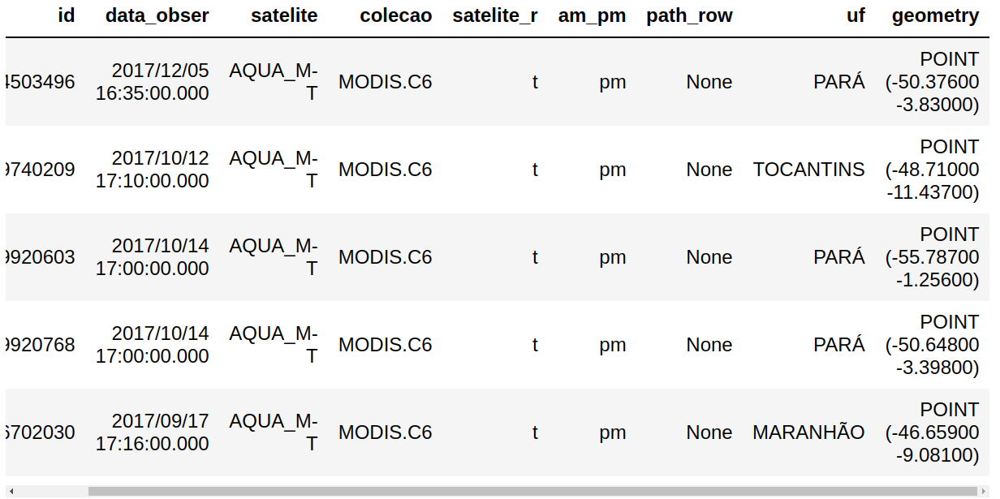{kind=link}
Para saber o número de focos carregados no GeoDataFrame, podemos utilizar a função interna do Python len, como fizemos para os tipos lista e tupla:
len(focos)
Saída:
208099
Podemos descobrir os tipos de dados das colunas do GeoDataFrame através do atributo dtypes:
focos.dtypes
Saída:
id object
data_obser object
satelite object
colecao object
satelite_r object
am_pm object
path_row object
uf object
geometry geometry
dtype: object
9.5.5. Visualizando dados na forma de mapas¶
Podemos visualizar os focos de queimada em um mapa utilizando a operação plot do GeoDataFrame:
focos.plot(marker='x', color='red', markersize=5, figsize=(10, 10));
Saída:
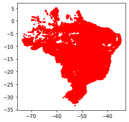{kind=link}
O GeoPandas utiliza a Matplotlib para construção das visualizações e possui diversas facilidades para construção de mapas, como veremos mais adiante nesta aula.
9.5.6. Explorando o Conjunto de Dados de Focos¶
Q1. Visualizar os focos de queimada do Estado de Minas Gerais.
O operador [] permite selecionarmos apenas as linhas contendo focos do Estado de Minas Gerais. Assim, podemos criar um novo GeoDataFrame chamado focos_mg:
focos_mg = focos[focos.uf == 'MINAS GERAIS']
Em seguida, podemos utilizar a operação plot para desenhar as geometrias desse novo GeoDataFrame:
focos_mg.plot(marker='x', color='red', markersize=5, figsize=(20, 10));
Saída:
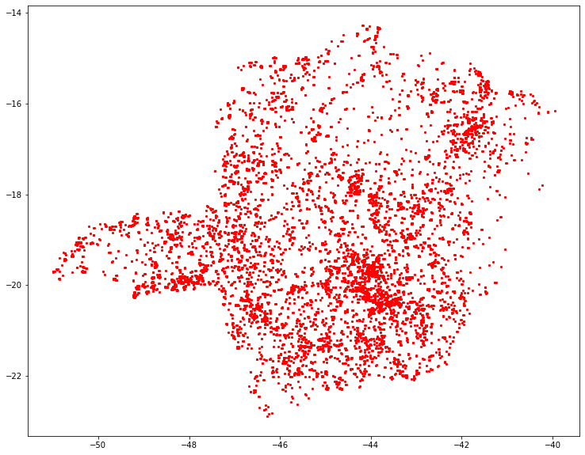{kind=link}
Q2. Visualizar os focos de queimada do Estado de Minas Gerais no mês de novembro.
Podemos alterar o formato de uma coluna contendo um texto (string) no formato data-hora para uma coluna do tipo datetime do Python para facilitar a manipulação dos dados desta coluna. Vamos fazer isso com a coluna data_obser:
import pandas as pd
focos['data_obser'] = pd.to_datetime(focos['data_obser'])
focos.dtypes
Saída:
id object
data_obser datetime64[ns]
satelite object
colecao object
satelite_r object
am_pm object
path_row object
uf object
geometry geometry
dtype: object
Repare que agora a coluna data_obser é do tipo datetime64, que nos permitirá utilizar operações de data e hora nesta coluna.
Agora, podemos realizar novamente a filtragem dos dados:
focos_mg = focos[focos.uf == 'MINAS GERAIS']
focos_mg_nov = focos_mg[focos_mg.data_obser.dt.month == 11]
Finalmente, podemos criar o mapa:
focos_mg_nov.plot(marker='x', color='red', markersize=5, figsize=(20, 10));
Saída:
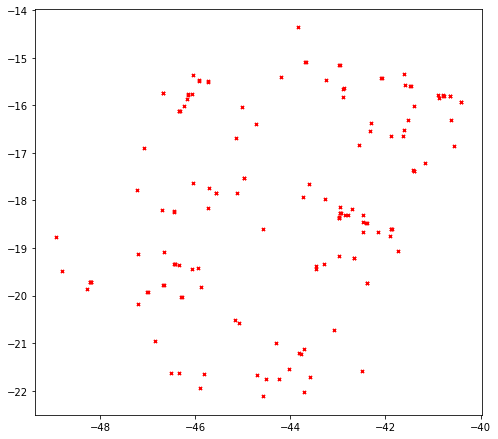{kind=link}
Q3. Adicionar o limite do Estado de Minas Gerais ao mapa criado em Q2.
Vamos criar um novo GeoDataFrame a partir do arquivo BRUFE250GC_SIR.shp:
uf = gpd.read_file('./data/br_unidades_da_federacao/BRUFE250GC_SIR.shp', encoding='utf-8')
uf.head()
Saída:
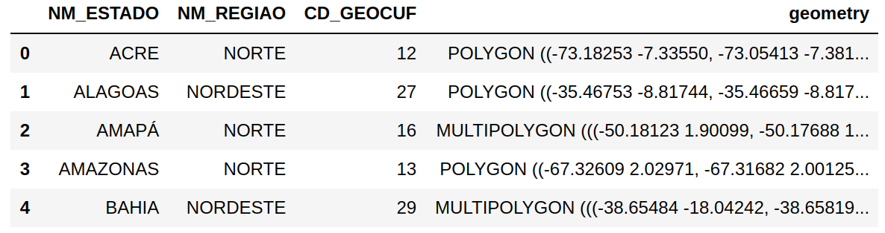{kind=link}
Podemos agora selecionar a feição do Estado de Minas Gerais no GeoDataFrame uf e criar um plot:
%matplotlib inline
import matplotlib.pyplot as plt
ax = uf[uf.NM_ESTADO == 'MINAS GERAIS'].plot(color='white', edgecolor='k')
Em seguida, podemos reutilizar a mesma área de desenho (ax) para plotar os focos:
focos_mg_nov.plot(ax=ax, marker='x', color='red', markersize=5);
plt.show()
Saída:
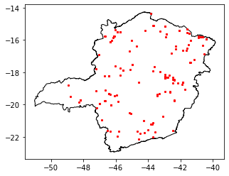{kind=link}
Q4. Qual a distribuição dos focos ao longo dos meses do ano em 2017?
Para responder esta pergunta podemos utilizar o operador de agregação (sumarização) groupby, disponível em um DataFrame.
Neste caso, precisaremos informar:
O critério da agregação: a parte contendo o número do mês na coluna com a data e hora da detecção do foco (coluna
data_obser).Utilizar uma das colunas para realizar a contagem através do operador
count.
focos_mes = focos.groupby(focos.data_obser.dt.month).uf.count()
focos_mes
Saída:
data_obser
1 2286
2 1271
3 1956
4 1742
5 2620
6 5464
7 17650
8 37459
9 72958
10 33642
11 19368
12 11683
Name: uf, dtype: int64
O objeto focos_mes retornado na operação acima corresponde a um pandas.core.series.Series:
type(focos_mes)
Saída:
pandas.core.series.Series
Na saída acima podemos notar o seguinte:
O nome da série é
uf, por conta da coluna usada para realizar a contagem.Os índices da série correspondem aos índices numéricos dos meses do ano.
Podemos re-indexar a série pelo nome do mês do ano. Para isso, podemos construir uma função lambda e aplicá-la através do operador map a cada um dos valores numéricos do índice do ano. Para transformar o mês do ano em um nome, utilizaremos o módulo calendar da biblioteca padrão do Python.
import calendar
novo_indice = map(lambda v : calendar.month_abbr[v], focos_mes.index)
l = list(novo_indice)
l
Saída:
['Jan', 'Feb', 'Mar', 'Apr',
'May', 'Jun', 'Jul', 'Aug',
'Sep', 'Oct', 'Nov', 'Dec']
Agora podemos construir explicitamente a nova série através do construtor pd.Series:
focos_mes = pd.Series(data=focos_mes.values, index=l)
focos_mes
Saída:
Jan 2286
Feb 1271
Mar 1956
Apr 1742
May 2620
Jun 5464
Jul 17650
Aug 37459
Sep 72958
Oct 33642
Nov 19368
Dec 11683
dtype: int64
Podemos também ajustar o nome da série e o rótulo do índice:
focos_mes.name= 'Número Focos/Mês'
focos_mes.index.name='mes'
focos_mes
Saída:
mes
Jan 2286
Feb 1271
Mar 1956
Apr 1742
May 2620
Jun 5464
Jul 17650
Aug 37459
Sep 72958
Oct 33642
Nov 19368
Dec 11683
Name: Número Focos/Mês, dtype: int64
Podemos apresentar um gráfico de barras com o total de focos por mês:
focos_mes.plot.bar(legend=True, fontsize=20);
Saída:
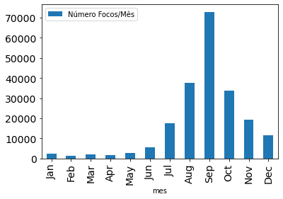{kind=link}
Podemos melhorar nosso gráfico controlando as diversas opções de plotagem fornecidas pela Matplotlib:
ax = focos_mes.plot(kind='bar', legend=True, fontsize=20, figsize=(20,10));
ax.set_title('Focos Mensal - 2017', fontsize=36);
ax.set_xlabel('Mes', fontsize=24);
ax.set_ylabel('#Focos', fontsize=24);
ax.legend(loc=2, prop={'size': 20});
Vamos salvar a figura do gráfico acima:
ax.figure.savefig('./img/chart-focos-mes-2017.png', dpi=100, format='png')
Q5. Qual a distribuição dos focos no ano de 2017 por bioma?
Como o GeoDataFrame focos não possuem informação sobre o bioma, podemos utilizar o mapa de biomas para realizar uma operação de junção entre as informações de focos e biomas. Para isso, vamos criar inicialmente um GeoDataFrame a partir do arquivo contendo os biomas:
biomas = gpd.read_file('./data/biomas/biomas.shp', encoding='utf-8')
Esse mapa de biomas encontra-se numa projeção diferente do mapa de focos. No entanto, para realizar operações espaciais entre diferentes GeoDataFrames, as geometrias nessas estruturas precisam estar no mesmo sistema de referência espacial. Por isso, vamos reprojetar as geometrias do mapa de biomas para a mesma do de focos, isto é, para um sistema identificado pelo código EPSG:4326:
biomas = biomas.to_crs('EPSG:4326')
Agora que temos as geometrias dos dois GeoDataFrames no mesmo sistema de referência espacial, podemos realizar a junção das informações utilizando a função sjoin, que irá combinar as linhas dos dois GeoDataFrames através de um relacionamento espacial:
focos_biomas = gpd.sjoin(focos, biomas, how='inner', op='intersects')
A operação acima irá criar um novo GeoDataFrame denominado focos_biomas que irá conter todas as colunas do GeoDataFrame focos além das das colunas não-geométricas do GeoDataDrame biomas:
focos_biomas.head()
Saída:
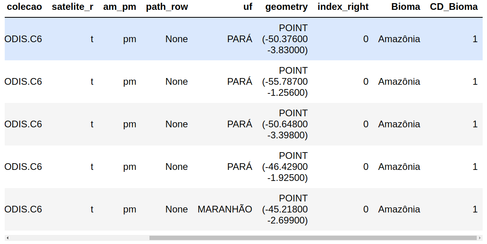{kind=link}
Agora, podemos utilizar o operador groupby para agrupar as linhas do novo GeoDataFrame focos_biomas pela coluna Bioma e, então, calcular a contagem de focos por bioma:
focos_bioma = focos_biomas.groupby('Bioma').Bioma.count()
focos_bioma
Saída:
Bioma
Amazônia 107311
Caatinga 10152
Cerrado 67287
Mata Atlântica 16584
Pampa 962
Pantanal 5794
Name: Bioma, dtype: int64
Podemos acertar o nome da série e do índice:
contagem_bioma.index.name = 'Biomas'
contagem_bioma.name = 'Numero Focos por Bioma'
contagem_bioma
Podemos agora desenhar um gráfico circular:
explode=[0.1, 0.0, 0.0, 0.0, 0.0, 0.0]
ax = contagem_bioma.plot(kind='pie',
explode=explode,
autopct='%1.1f%%',
figsize=(8,8), fontsize='14');
ax.set_title('Focos por Bioma - 2017', fontsize=20);
ax.set_ylabel('');
Saída:
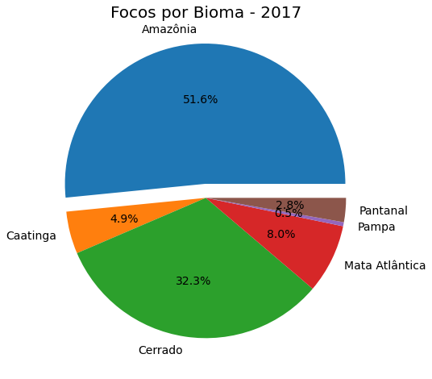{kind=link}
Q6. Qual a frequência mensal de queimadas por bioma?
Vamos adicionar uma nova coluna chamada mes no GeoDataFrame focos_biomas para facilitar o processamento:
focos_biomas['mes'] = focos_biomas['data_obser'].dt.month
focos_biomas.head()
Saída:
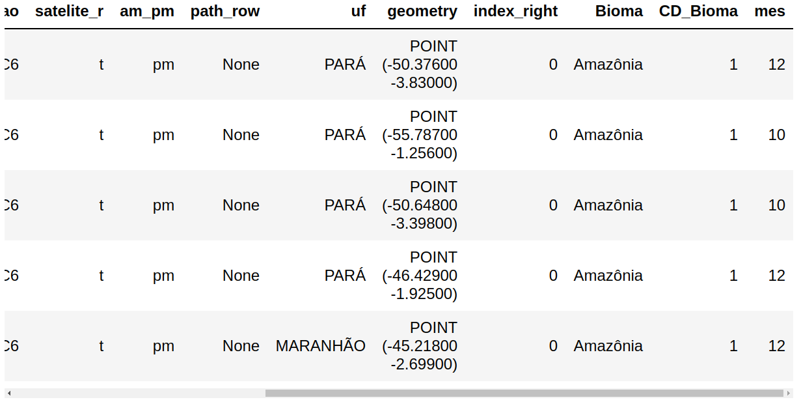{kind=link}
Vamos apresentar as informações em uma pivot_table:
pvt = pd.pivot_table(focos_biomas, values='id', index=['Bioma'],
columns=['mes'], aggfunc='count',
fill_value=0, margins=True)
pvt.columns=['jan', 'fev', 'mar', 'abr', 'mai', 'jun', 'jul', 'ago', 'set', 'out', 'nov', 'dez', 'total']
pvt
Saída:
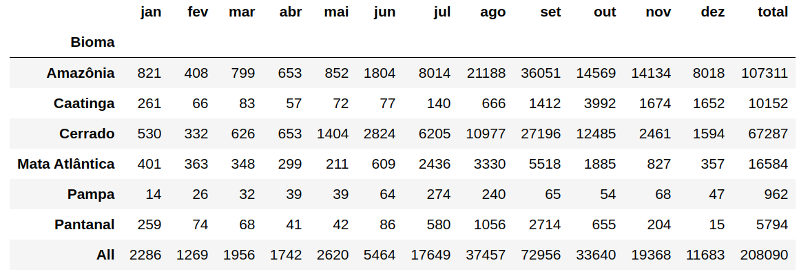{kind=link}
Vamos remover a totalização nas linhas e colunas para obter uma estatística descritiva:
pvt = pd.pivot_table(focos_biomas, values='id', index=['Bioma'],
columns=['mes'], aggfunc='count',
fill_value=0)
pvt.columns=['jan', 'fev', 'mar', 'abr', 'mai', 'jun', 'jul', 'ago', 'set', 'out', 'nov', 'dez']
pvt
Saída:
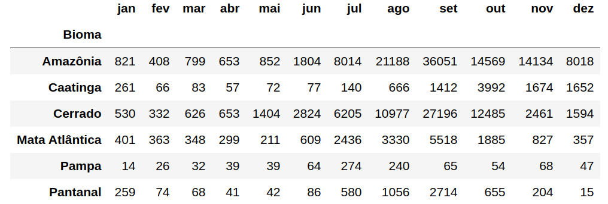{kind=link}
pvt.describe()
Saída:
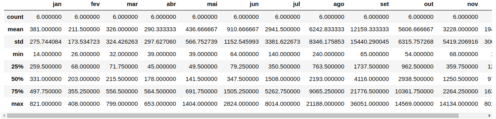{kind=link}
Q7. Apresentar uma tabela com a quantidade de focos por município ao longo dos meses.
Q8. Quais os municípios do “top 5”?